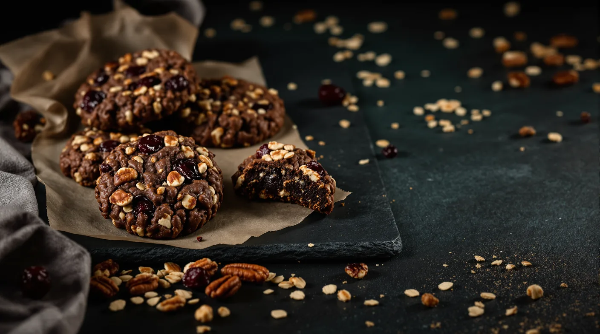

No-Bake Cannabis Oatmeal Cookies with Tart Cherries and Pecans
Chewy chocolate-oat cookies made on the stovetop, with cannabutter stirred in after the boil and the batch shaped into exactly 12 so the math stays simple.

Key takeaways
- Boil the sugar, evaporated milk, cocoa and plain butter for 1 minute; the cannabutter goes in off the heat.
- Shape exactly 12 cookies, so each one carries a twelfth of the THC.
- Store them in a labeled, airtight container in the fridge, apart from everyday snacks.
- Certified gluten-free oats, plant-based butter and coconut milk make easy swaps.
These no-bake cannabis cookies are chewy chocolate-oat rounds with tart cherries and toasted pecans, made on the stovetop with no oven. Stirring the cannabutter in after the one-minute boil spares it the hottest step, and shaping exactly 12 cookies keeps the math simple.
How to Dose No-Bake Cannabis Cookies
The boil uses plain butter only. Off the burner, stir in the measured cannabutter, fold in the oats and shape 12 equal cookies, each holding a twelfth of the THC. To estimate your butter's strength, start with our cannabutter guide.
They're for adults 21 and older. Eat one, then wait a full 2 hours before reaching for a second (dosing basics).
Ingredients
Quick oats set more firmly than old-fashioned ones, and evaporated milk makes a richer base than regular milk. Pecans, tart cherries, cocoa, vanilla and salt carry the flavor; peanut butter is optional. Making fresh cannabutter? Order flower ahead from Springfield Ave Dispensary for in-store or curbside pickup.
Three Moments That Matter
- The boil. Start the minute once bubbles cover the surface. Too short and the cookies stay soft; too long and they crumble.
- Off the heat. Mix the cannabutter in completely before the oats go in.
- Portioning. Weigh the mixture and divide by 12, or use a level scoop.
Storage and Labeling
Store the cookies airtight in the fridge, labeled "THC" with the date and the dose per cookie, and keep them out of sight: to a child, they look like any other cookie. Keep Poison Help's number, 1-800-222-1222, handy, and call a veterinarian if a pet eats one.
Gluten-Free and Vegan Swaps
Certified gluten-free oats, with every add-in checked for gluten, make a gluten-free batch. For vegan cookies, use plant-based butter in the boil, full-fat coconut milk instead of evaporated milk, and an infusion made with coconut oil or vegan butter.
Recipe
- Makes
- 12 cookies
- Prep time
- 10 minutes
- Cook time
- 5 minutes
Ingredients
- 1¼ cups quick oats (certified gluten-free if needed)
- ⅓ cup pecans, toasted and chopped
- ⅓ cup dried tart cherries, chopped
- ⅛ teaspoon salt
- 1 cup granulated sugar
- ¼ cup evaporated milk
- 2 tablespoons plain unsalted butter, for the boil
- 2 tablespoons unsweetened cocoa powder
- 2 tablespoons butter for after the boil: your measured cannabutter, topped up with plain butter (see the dosing note)
- 1 teaspoon vanilla extract
- 1 to 2 tablespoons creamy peanut butter (optional)
Steps
- Line a tray with parchment. Combine the oats, pecans, cherries and salt in a bowl.
- In a medium saucepan over medium heat, stir together the sugar, evaporated milk, plain butter and cocoa. Bring to a full rolling boil and boil for exactly 1 minute, stirring.
- Take the pan off the heat. Stir in the cannabutter blend, the peanut butter if using, and the vanilla until smooth, about 30 seconds.
- Fold in the oat mixture until every oat is coated.
- Portion 12 equal mounds onto the parchment with a level scoop, or weigh the mixture and divide by 12.
- Chill for about 30 minutes, until set, then store in a labeled airtight container in the fridge.
Dosing note
THC per cookie = THC in the cannabutter you add ÷ 12. Estimate your butter first: grams of flower × THC percentage (as a decimal) × 1,000 gives the most THC it can hold. For example, 3.5 g of flower labeled 16% THC, infused into 1 cup (16 tablespoons) of butter, comes to at most 560 mg, roughly 35 mg per tablespoon. One tablespoon of that here, with 1 tablespoon of plain butter, means no more than about 3 mg per cookie. Decarboxylation and infusion lose some THC, so these figures are ceilings, not promises. Start low with one cookie, give it 2 hours, and keep the labeled container somewhere kids and pets can't reach.
Frequently asked questions
Why add the cannabutter off the heat?
To keep each cookie's dose predictable. Off the burner, you have time to blend the butter evenly before the oats go in, and the infusion skips the boil, which runs hotter than plain boiling water. Long or very high heat can cost THC, so there's no reason to boil it.
How long do they keep?
About a week, sealed airtight and refrigerated, which also keeps them firm. For longer storage, freeze them in a single layer, then bag and label them and thaw one at a time. Either way, the dose per cookie belongs on the label.
Are no-bake cookies gluten-free?
Not automatically. Oats contain no gluten themselves, but cross-contact with wheat, barley or rye is common, so regular oats can carry some. If gluten matters to you or someone you're sharing with, buy oats labeled certified gluten-free and check the add-ins. If you have celiac disease, ask your doctor or a dietitian first: research suggests most people with it can eat moderate amounts of oats, but not everyone.
Sources
- Centers for Disease Control and Prevention: Cannabis frequently asked questions cdc.gov
- Wang M. et al. (2016), Decarboxylation study of acidic cannabinoids, Cannabis and Cannabinoid Research pmc.ncbi.nlm.nih.gov
- National Institute of Diabetes and Digestive and Kidney Diseases (NIH): Eating, diet and nutrition for celiac disease (oats and cross-contact) niddk.nih.gov
For adults 21 and older. Keep cannabis away from children and pets, and never drive after consuming. In New Jersey, cannabis smoking is allowed where cigarette smoking is permitted, unless stated otherwise.
1070 Springfield Ave Suite C, Irvington, NJ 07111